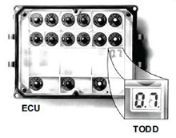
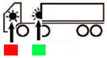
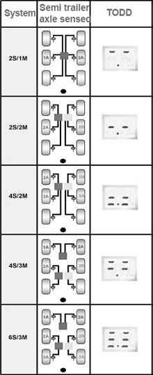
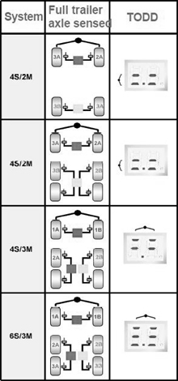

The system uses TODD (total on-board diagnostic display) to read out fault codes. TODD is found under the cover for the ECU.

TODD can be used to read out fault codes and also to check the ABS-sensors on the trailer.
To check the ABS-system, connect the ABS-cable between tractor and trailer, pres down the brake pedal, turn on the ignition, and check that the ABS-2 warning light in the cab and the warning light on the trailer turn on in the following order.

- Lights shall be on for 2.5 seconds.
- Lights turn off for 1 second.
- Lights turn on until a speed of 10 km/h is reached, then they shall turn off to indicate that the system is OK.
If the lights do not turn off at speeds above 10 km/h, loosen the cover for the ECU (fastened with 4 screws) and check the fault codes in TODD.
| Black display | No ignition current to ECU |
| 00 | System is OK. Vehicle is moving |
| 01 | 1A sensor/cable circuit open/break |
| 02 | 1B sensor/cable circuit open/break |
| 03 | 2A sensor/cable circuit open/break |
| 04 | 2B sensor/cable circuit open/break |
| 05 | 3A sensor/cable circuit open/break |
| 06 | 3B sensor/cable circuit open/break |
| 07 | System is OK. Vehicle stationary |
| 08 | Retarder/cabling open circuit |
| 09 | Retarder/cabling short-circuiting |
| 0C | Reset to drive/cabling open circuit |
| 0A | Reset to drive/cabling open circuit |
| 0E | Warning light circuit failure |
| Low sensor output group | Possible causes: worn sensor, wrong distance between sensor and sensor ring gear, open/shorted circuit. |
| 11 | 1A sensor system failure |
| 12 | 1B sensor system failure |
| 13 | 2A sensor system failure |
| 14 | 2B sensor system failure |
| 15 | 3A sensor system failure |
| 16 | 3B sensor system failure |
| 20 | Outer ring gear |
| Intermittent low sensor outgoing group | Loose sensor, contact, damaged bracket for sensor, wrong distance between sensor and sensor ring gear, damaged sensor or cable. |
| 21 | 1A sensor system failure |
| 22 | 1B sensor system failure |
| 23 | 2A sensor system failure |
| 24 | 2B sensor system failure |
| 25 | 3A sensor system failure |
| 26 | 3B sensor system failure |
| 37 | Diagnostic code sent to ABS ECU to activate light sequence |
| A wheel with slow reset group | Brakes return slowly, mechanical brake failure, dry bearings, wrong cabling, modulator failure. |
| 40 | Sensor cabling crossed over an axle |
| 41 | Slow reset of a wheel with red channel |
| 42 | Slow reset of a wheel with blue channel |
| 43 | Slow reset of a wheel with yellow channel |
| Open circuit modulator, solenoid or open circuit to solenoid group | |
| 61 | Hold solenoid circuit failure, red channel |
| 62 | Hold solenoid circuit failure, blue channel |
| 63 | Hold solenoid circuit failure, yellow channel |
| 67 | Dump solenoid circuit failure, red channel |
| 68 | Dump solenoid circuit failure, blue channel |
| 69 | Dump solenoid circuit failure, yellow channel |
| Short-circuiting modulator solenoid or solenoid circuit group | |
| 71 | Hold solenoid circuit failure, red channel |
| 72 | Hold solenoid circuit failure, blue channel |
| 73 | Hold solenoid circuit failure, yellow channel |
| 77 | Dump solenoid circuit failure, red channel |
| 78 | Dump solenoid circuit failure, blue channel |
| 79 | Dump solenoid circuit failure, yellow channel |
| Modulator solenoid circuit or solenoid short-circuiting to B+ group | |
| 80 | Poor insulation in modulator solenoid or circuit failure |
| 81 | Hold solenoid circuit failure red channel |
| 82 | Hold solenoid circuit failure blue channel |
| 83 | Hold solenoid circuit failure yellow channel |
| 87 | Dump solenoid circuit failure red channel |
| 88 | Dump solenoid circuit failure blue channel |
| 89 | Dump solenoid circuit failure yellow channel |
| Power supply group | |
| 90 | Power supply at ECU lower than 18v when solenoid is pulled |
| 91 | Wrong power supply form ISO 7638 pin 1 or defective fuse |
| 92 | Power supply at ECU higher than 32v |
| 93 | Internal ECU failure |
| 99 | Internal ECU failure |
| System function group | |
| A1 | Reset to make raising function available |
| A2 | Retarder function available |
| A3 | Axle lock signal available |
| Extra codes | |
| CA | Erase stored faults |
| CC | Clears configuration |
| CF | Sensor and solenoid not connected |
Depending on the configuration, it is also possible to check the ABS-sensors by turning the wheels (1 rev / 2 sec) and check TODD at the same time. If the ABS-sensor is intact TODD will show this with a line in the display.
(Example 2S/1M = 2 sensors and 1 modulator.)

